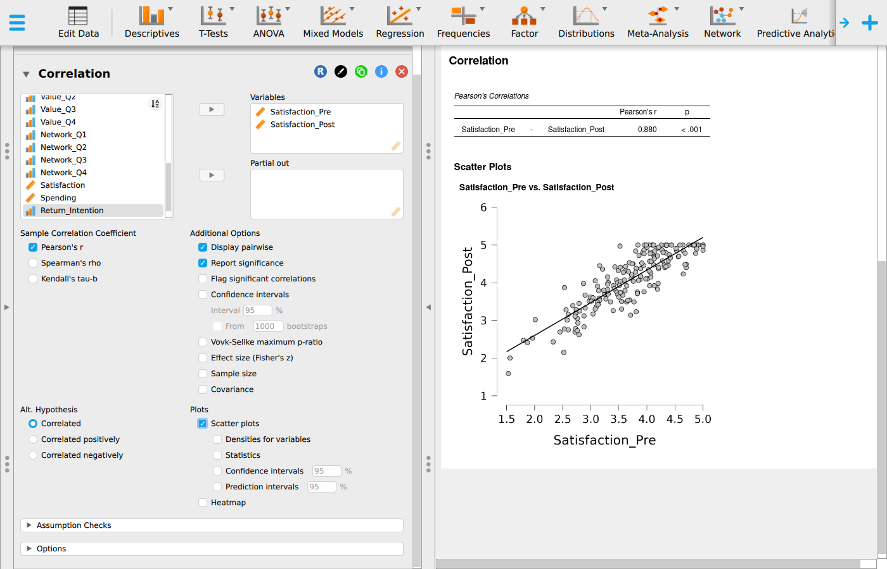
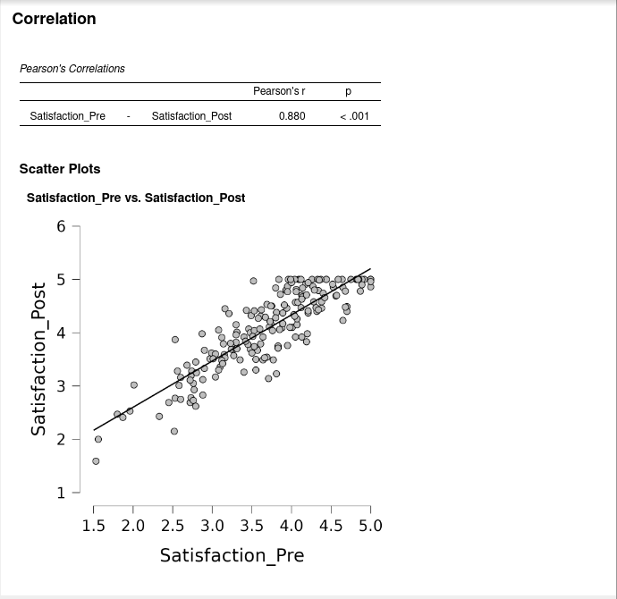
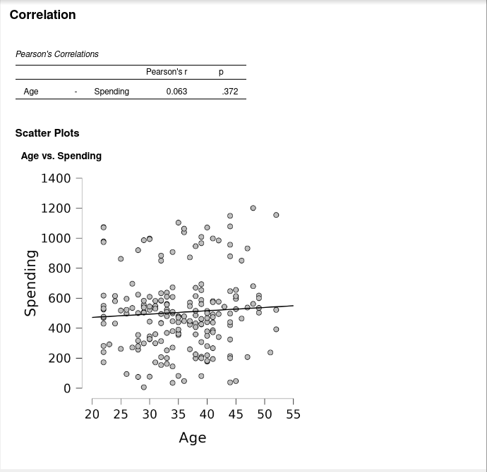
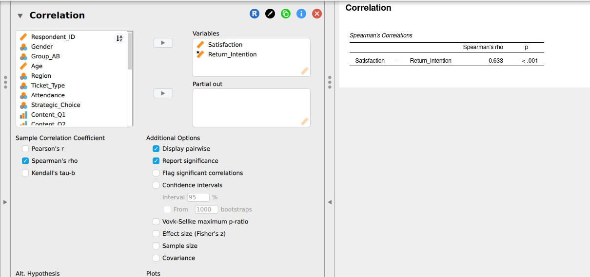

Correlation: Pearson and Spearman
Pearson correlation, Spearman’s rank correlation, Spearman’s rho, correlation coefficient, coefficient of determination, scatterplot, correlation and causation
Chapter 9: Correlation
The service manager asks: do customers who are pleased before the event stay pleased after it, and are the most satisfied customers the ones most likely to come back? Both questions ask whether two measures move together. The first pairs two scale scores. The second pairs a score with a 1 to 5 rating, and needs a correlation built on ranks.
This chapter uses DMM_Teaching_Data_Full.csv, the same 200 customer records as chapters 1, 2, 4 and 5. Every figure quoted from it comes from that file. The two hand-calculation examples use small illustrative data sets, and each is marked as such.
This chapter’s lecture
Lecture Correlation for scale data
Discussion
1 Welcome and weekly goals
⏱ 10 min
Return to statistical analysis by looking at how variables move together in management data.
Acquisition
2 Correlation logic
⏱ 30 min
How to choose and interpret a correlation for scale data, and why association is not the same as causation.
Practice
3 Worked example and discussion
⏱ 15 min
Read a short output example and explain the direction, strength and limitation of the relationship.
Assessment
4 Exit check
⏱ 5 min
A short exit check on correlation choice or interpretation.
Learning objectives
After studying this chapter you should be able to:
- Calculate Pearson’s r for a small dataset. CLO 4
- Interpret a correlation by its scatterplot, sign, size, R² and p-value. CLO 4
- Calculate Spearman’s rho from ranks. CLO 4
- Select between Pearson’s r and Spearman’s rho. CLO 4
- Explain the limits a correlation places on causal claims. CLO 6
- Report a correlation in APA style and for a manager. CLO 6
The tag after each objective names the course learning outcome it serves.
This week’s learning plan is 9 hours: 1 hour of synchronous lecture, 2 hours of synchronous tutorial and 6 hours of asynchronous self-study. Put your self-study time into the worked examples and the Try It exercises first.
This chapter uses the p-value and the significance level from chapter 4, and the reporting rules from chapter 5. We run the analyses in JASP, and the hand calculations need a calculator.
You are permitted to use Google NotebookLM to brainstorm the concepts. Complete the worked examples and the Try It exercises yourself, with no AI assistance. The full policy is on the Using AI on This Module page.
In chapter 5 we compared the means of two groups. In this chapter we take two measures on the same customers and ask whether they move together.
The scatterplot
Each of our 200 customers rated the event before it, in Satisfaction_Pre, and after it, in Satisfaction_Post. If we draw one dot per customer, placed across by the first rating and up by the second, we get a scatterplot. The dots for these two ratings rise from lower left to upper right in a narrow band: customers who start high tend to finish high.
We read three things from a scatterplot:
- The direction of the dots: rising from left to right shows a positive relationship, and falling shows a negative one.
- The form of the pattern: a straight band, a curve, or a shapeless cloud.
- Any unusual points: a dot far from the rest, an outlier, can pull a correlation up or down on its own.
A correlation coefficient reduces the plot to one number. We look at the plot first, because that number carries no information about the form or the outliers.
Pearson’s r
Pearson’s correlation coefficient, written \(r\), measures how closely two scale variables follow a straight line. It runs from \(-1\) to \(+1\):
- \(r\) near \(+1\): when one variable is high, the other tends to be high
- \(r\) near \(-1\): when one variable is high, the other tends to be low
- \(r\) near 0: the dots show no straight-line pattern.
For a sample of \(n\) cases, each with a pair of values \(x\) and \(y\):
\[r = \frac{\sum (x - \bar{x})(y - \bar{y})}{\sqrt{\sum (x - \bar{x})^2 \times \sum (y - \bar{y})^2}}\]
where \(r\) is the sample Pearson correlation, \(x\) and \(y\) are each case’s two values, \(\bar{x}\) and \(\bar{y}\) are the two means, \(n\) is the number of cases and \(\sum\) adds over all \(n\) cases. A case above both means, or below both, gives a positive product \((x - \bar{x})(y - \bar{y})\) and pushes \(r\) up. A case above one mean and below the other gives a negative product and pushes \(r\) down. The denominator rescales the total, so \(r\) lies between \(-1\) and \(+1\) whatever the units of \(x\) and \(y\).
Worked example 9.1
Advertising days and bookings (illustrative)
An events company advertised five events for different numbers of days, \(x\), and recorded the bookings, \(y\), in tens: (2, 3), (4, 5), (5, 4), (6, 7) and (8, 6). The figures are illustrative.
Calculate Pearson’s r, and describe the relationship.
Step 1, the means: \(\bar{x} = 25 \div 5 = 5\) and \(\bar{y} = 25 \div 5 = 5\).
Step 2, the deviations, their products and their squares:
| \(x\) | \(y\) | \(x - \bar{x}\) | \(y - \bar{y}\) | Product | \((x - \bar{x})^2\) | \((y - \bar{y})^2\) |
|---|---|---|---|---|---|---|
| 2 | 3 | −3 | −2 | 6 | 9 | 4 |
| 4 | 5 | −1 | 0 | 0 | 1 | 0 |
| 5 | 4 | 0 | −1 | 0 | 0 | 1 |
| 6 | 7 | 1 | 2 | 2 | 1 | 4 |
| 8 | 6 | 3 | 1 | 3 | 9 | 1 |
| Total | 11 | 20 | 10 |
Step 3, the coefficient:
\[r = \frac{11}{\sqrt{20 \times 10}} = \frac{11}{\sqrt{200}} = \frac{11}{14.142} = .78\]
Reading: the relationship is positive and strong. Events advertised for longer tended to take more bookings.
Interpreting r
We read the sign first, then the size. For the size, ignoring the sign, we use this rough guide, based on the benchmarks Cohen (1988) suggested:
| Size of r | Description |
|---|---|
| About .10 | Weak |
| About .30 | Moderate |
| .50 or above | Strong |
These cut-offs are conventions, and the setting matters: \(r = .30\) can be important in a field where most relationships are weak.
Each \(r\) comes with a p-value. It tests the null hypothesis that the two variables have no linear relationship in the population:
\[H_0: \rho = 0 \qquad H_1: \rho \neq 0\]
where \(H_0\) is the null hypothesis, \(H_1\) is the alternative hypothesis, and \(\rho\) (rho) is the population correlation, the value \(r\) would take if we had every customer. The decision rule is the one from chapter 4 (making the decision): below .05, we reject \(H_0\). The degrees of freedom are \(n - 2\), where \(n\) is the number of cases, so 198 for our 200 customers.
The coefficient of determination, R²
Squaring \(r\) gives the coefficient of determination, \(R^2\). We read it as the share of the variation in one variable that is shared with the other. For example: \(r = .88\) gives \(R^2 = .88 \times .88 = .77\). So about 77% of the variation in post-event satisfaction is shared with pre-event satisfaction. The other 23% is unshared, and \(R^2\) gives no account of where it comes from. JASP prints \(r\), and we calculate \(R^2\) ourselves.
Three pairs of measures in a hotel group give \(r = -.45\), \(r = .08\) and \(r = .72\).
- Describe each by its direction and size, using Table 9.2.
- Calculate \(R^2\) for each, as a percentage.
- \(r = -.45\): negative and moderate, close to strong. \(r = .08\): positive and weak, close to none. \(r = .72\): positive and strong.
- \((-.45)^2 = .2025\), about 20%. \(.08^2 = .0064\), under 1%. \(.72^2 = .5184\), about 52%. The sign drops out when we square, so \(R^2\) is never negative.
Correlation and causation
With a correlation we measure how far two variables move together. The reason they move together needs separate evidence. A strong \(r\) is consistent with four explanations:
- \(x\) affects \(y\)
- \(y\) affects \(x\), the reverse direction
- a third variable affects both
- coincidence in this sample.
For example: ice-cream sales and drowning incidents rise and fall together, because both rise in hot weather. To show a cause, we need a design built for it, such as an experiment. Every report of a correlation states this limitation.
Running a Pearson correlation in JASP
We run a Pearson correlation in JASP on DMM_Teaching_Data_Full.csv. Open the file and follow these steps:
- Choose Regression → Classical → Correlation.
- Move
Satisfaction_PreandSatisfaction_Postinto Variables. - Keep Pearson’s r and Report significance ticked.
- Under Plots, tick Scatter plots.


Worked example 9.2
Reading and reporting the satisfaction correlation
Use the JASP output in Figure 9.2, for 200 customers.
Read \(r\) and \(p\), calculate \(R^2\), decide at \(\alpha = .05\), and report the result in APA style and for the manager.
Reading: JASP reports \(r = .880\) and \(p < .001\), and the dots rise along a straight band. The relationship is positive and strong.
R²: \(.880 \times .880 = .774\), so 77% of the variation is shared.
Decision: \(p\) is below .05, so we reject the null hypothesis of no linear relationship.
In APA style: Pre-event and post-event satisfaction were strongly and positively related, \(r(198) = .88\), \(p < .001\), \(R^2 = .77\).
For the manager: Customers who rate the event highly beforehand tend to rate it highly afterwards, so first impressions carry through the event. Whether the first rating causes the second would need a different design to establish.
For contrast, the same steps with Age and Spending give \(r = .063\) and \(p = .372\). The scatterplot is a shapeless cloud, and \(R^2 = .004\): less than 1% of the variation is shared.

Three APA rules apply to every correlation:
- The degrees of freedom go in brackets after \(r\): \(r(198)\).
- The values of \(r\), \(p\) and \(R^2\) have no zero before the point, because none can exceed 1.
- A p-value below .001 is written \(p < .001\).
Run a Pearson correlation of Waiting_Time_Mins and Satisfaction in JASP, with the scatterplot.
- Describe the scatterplot’s direction and form, and note any unusual points.
- Report \(r\), its degrees of freedom and \(p\).
- Calculate \(R^2\) as a percentage.
- Write one sentence for the manager. Then give two of the four explanations in correlation and causation that a correlation between waiting time and satisfaction would leave open.
- The dots form a shapeless cloud with no rising or falling direction. One customer who waited 90 minutes sits far to the right, and one who waited 12 minutes far to the left. Without these two customers \(r\) is \(-.047\), so neither changes the reading.
- JASP gives \(r = -.016\) and \(p = .822\), reported as \(r(198) = -.02\), \(p = .822\): a negligible negative relationship, not statistically significant.
- \(R^2 = (-.016)^2 = .0003\), well under 1%.
- For the manager: in our records, waiting time and satisfaction move independently of each other. Had the correlation been strong, two of the explanations would be that waiting lowers satisfaction, or that a third variable, such as a crowded event day, raises waits and lowers satisfaction together.
Spearman’s rho
Our second question pairs Satisfaction, a score from 1 to 5, with Return_Intention, a single 1 to 5 rating. A rating is ordinal: we know that 4 is above 3, but the gap between a 3 and a 4 need not equal the gap between a 4 and a 5. For an outcome like this we compare ranks: we put the customers in order on each measure, and ask whether the two orders agree.
For example: two managers rank six venues from 1, the best, to 6. If the managers agree exactly, every venue has the same rank twice. If they disagree completely, the venue one ranks 1st the other ranks 6th.
Spearman’s rank correlation coefficient, written \(r_s\) or \(\rho\) (rho), is Pearson’s r calculated on the ranks (Spearman, 1904). It measures a monotonic relationship: as one variable rises, the other tends to rise, or tends to fall, though not necessarily along a straight line. It runs from \(-1\) to \(+1\) and reads like \(r\), with the same size guide in Table 9.2. When no two cases share a rank:
\[r_s = 1 - \frac{6 \sum d^2}{n(n^2 - 1)}\]
where \(r_s\) is the sample Spearman correlation, \(d\) is the difference between a case’s two ranks and \(n\) is the number of cases. When cases share a rank, a tie, each takes the average of the ranks they span. JASP calculates Pearson’s r from those average ranks.
Worked example 9.3
Two managers rank six venues (illustrative)
Manager A ranks venues A to F as 1, 2, 3, 4, 5 and 6. Manager B ranks the same venues 2, 1, 4, 3, 6 and 5, in an illustrative ranking.
Calculate Spearman’s rho, and describe how far the managers agree.
Step 1, the rank differences:
| Venue | Rank A | Rank B | \(d\) | \(d^2\) |
|---|---|---|---|---|
| A | 1 | 2 | −1 | 1 |
| B | 2 | 1 | 1 | 1 |
| C | 3 | 4 | −1 | 1 |
| D | 4 | 3 | 1 | 1 |
| E | 5 | 6 | −1 | 1 |
| F | 6 | 5 | 1 | 1 |
| Total | 6 |
Step 2, the coefficient, with \(n = 6\):
\[r_s = 1 - \frac{6 \times 6}{6 \times (36 - 1)} = 1 - \frac{36}{210} = 1 - .171 = .83\]
Reading: the managers agree strongly. Each swaps only neighbouring venues, so the two orders run close together.
Five events are ranked by attendance as 1, 2, 3, 4 and 5, and by mean satisfaction as 3, 1, 2, 5 and 4, in illustrative data.
- Calculate \(\sum d^2\).
- Calculate Spearman’s rho.
- Describe the relationship.
- The differences are \(-2, 1, 1, -1, 1\), so \(\sum d^2 = 4 + 1 + 1 + 1 + 1 = 8\).
- \(r_s = 1 - (6 \times 8) \div (5 \times 24)\), which is \(1 - 48 \div 120 = .60\).
- Positive and strong: the better-attended events tended to be the better-rated ones, with some swaps in the order.
Running Spearman’s rho in JASP
Spearman’s rho runs from the same panel as Pearson’s r:
- Choose Regression → Classical → Correlation.
- Move
SatisfactionandReturn_Intentioninto Variables. - Under Sample Correlation Coefficient, untick Pearson’s r and tick Spearman’s rho.
- Keep Report significance ticked.

JASP reports \(r_s = .633\) and \(p < .001\). The relationship is positive and strong, and we reject the null hypothesis of no monotonic relationship.
In APA style: Satisfaction and return intention were strongly and positively related, \(r_s(198) = .63\), \(p < .001\).
For the manager: Customers with higher satisfaction also tend to report a stronger intention to return, so we can track both measures together at each event. Stated intention and actual repeat bookings are different measures, and this file records only the first.
Run Spearman’s rho for Content_Q1, a 1 to 5 rating of the event’s content, and Return_Intention in JASP.
- Report \(r_s\), its degrees of freedom and \(p\).
- Describe the relationship, and write one sentence for the manager.
- \(r_s(198) = .45\), \(p < .001\).
- Positive and moderate to strong. For the manager: customers who rate the content highly also tend to report a stronger intention to return. Testing whether better content raises that intention would need a designed comparison, such as a trial of a revised programme.
Choosing Pearson or Spearman
We choose the coefficient from the type of each variable, just as we chose the test from the design in chapter 5:
| Variables | Coefficient |
|---|---|
| Both scale, with a straight-line pattern | Pearson’s r |
| One or both ordinal, such as 1 to 5 ratings or ranks | Spearman’s rho |
| Scale, with a curved but steady rise or fall | Spearman’s rho |
| Scale, with outliers that pull r on their own | Spearman’s rho, reported alongside r |
We choose the coefficient from the variables, before we look at the results.
Worked example 9.4
Value ratings and return intention
Value_Q1 and Return_Intention are both 1 to 5 ratings. JASP gives Pearson’s \(r = .193\), \(p = .006\), and Spearman’s \(r_s = .126\), \(p = .075\).
Choose the coefficient to report, and state the conclusion at \(\alpha = .05\).
Choice: both variables are ordinal ratings with only five values, so we report Spearman’s rho, following Table 9.4.
Decision: \(p = .075\) is above .05, so we retain the null hypothesis. The evidence of a monotonic relationship between value ratings and return intention is insufficient at \(\alpha = .05\).
The lesson: the two coefficients lead to different decisions here. Choosing the coefficient after seeing both results would let us pick the significant one, so the choice comes from the variables, and it comes first.
In APA style: Value ratings and return intention were not significantly related, \(r_s(198) = .13\), \(p = .075\).
Choose Pearson’s r or Spearman’s rho for each pair, and give the reason.
AgeandSpendingContent_Q1andValue_Q1- Two judges’ rankings of 10 trade stands
Satisfaction_PreandSatisfaction_Post
- Pearson’s r: both are scale variables, years and US dollars.
- Spearman’s rho: both are 1 to 5 ratings, so both are ordinal.
- Spearman’s rho: the data are ranks.
- Pearson’s r: both are satisfaction scores on a continuous 1 to 5 scale, and the scatterplot shows a straight band. Spearman’s rho gives a similar value, \(r_s = .87\).
Limitations
- Pearson’s r applies to straight-line relationships. A curved relationship can produce \(r\) near 0.
- One extreme case, an outlier, can make \(r\) much larger or smaller. Ranks reduce that case’s influence on Spearman’s rho.
- Spearman’s rho applies to a steady rise or fall. A pattern that rises and then falls can produce \(r_s\) near 0.
- Neither coefficient establishes why the variables are associated.
Section summary
We read a scatterplot first, for its direction, form and outliers. Pearson’s r measures a straight-line relationship between two scale variables and runs from \(-1\) to \(+1\), with about .10 weak, .30 moderate and .50 or above strong. Its p-value tests \(\rho = 0\) on \(n - 2\) degrees of freedom, and \(R^2\), the square of \(r\), gives the share of variation the two variables have in common. Spearman’s rho is Pearson’s r on ranks, so it suits ordinal ratings, ranks and curved but steady patterns, and we choose between the two from the variables, before seeing the results. In the teaching dataset, pre-event and post-event satisfaction were strongly related, \(r(198) = .88\), \(p < .001\), \(R^2 = .77\), and satisfaction and return intention were strongly related, \(r_s(198) = .63\), \(p < .001\), and neither result establishes a cause.
References and further reading
Cohen, J. (1988). Statistical power analysis for the behavioral sciences (2nd ed.). Lawrence Erlbaum.
Holmes, A., Illowsky, B., & Dean, S. (2023). Introductory business statistics 2e. OpenStax. https://openstax.org/details/books/introductory-business-statistics-2e
Spearman, C. (1904). The proof and measurement of association between two things. The American Journal of Psychology, 15(1), 72-101. https://doi.org/10.2307/1412159